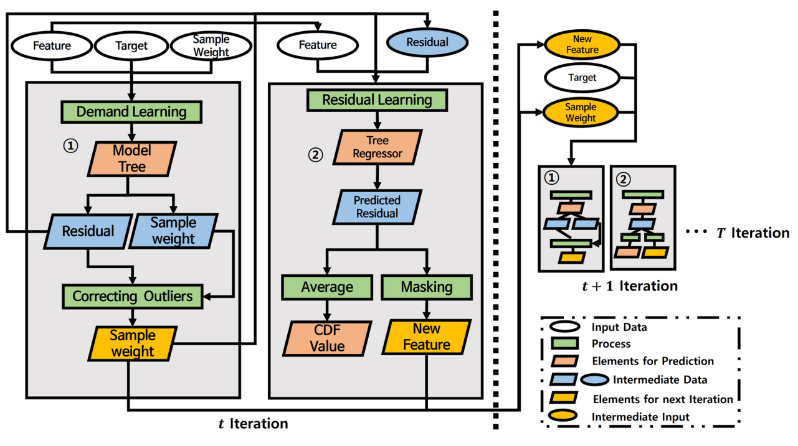

Extreme-demand prediction using residual information
AdaBoost.RDT: AdaBoost Integrated With Residual-Based Decision Tree for Demand Prediction of Bike Sharing Systems Under Extreme Demands
I combined A-MT with the residual tree R-DT to predict extreme demand without suppressing it as noise. The study evaluates both reduced extreme-demand error and increased error at very low demand.
- Method: selective Lasso model trees + residual-sign features + quantile adjustment
- Results: a trade-off between lower extreme-demand error and higher very-low-demand error


Research problem
Standard boosting can overemphasize extreme demand with large errors, while noise-robust methods can suppress meaningful demand spikes. I investigated missed spikes in bike-sharing demand alongside the effects on low-demand predictions.
Approach
- A-MT: Checks target distributions within decision-tree leaves and fits Lasso regression only in leaves meeting the criteria. This design aims to reduce low-demand overprediction caused by placing linear models in every leaf.
- R-DT: Predicts the residuals of A-MT in the same iteration using a separate tree. A binary feature indicating whether the predicted residual is positive becomes an input to the next iteration. This differs from simply using residual values as the next target.
- Final prediction: Uses the mean predicted residual across iterations to assess under- or overestimation and adjusts the weighted quantile Q used to combine A-MT predictions. Q is bounded between 0.1–0.9.
Data, comparison models, and evaluation
I analyzed hourly station-level demand in Seoul and Daejeon, separating weekdays and weekends. Features covered time, weather, local population, and transportation. Low, medium, and extreme demand were evaluated separately. Comparisons used 6 models: AdaBoost, AdaBoost.RT, GBM, XGBoost, MBoost, and LADBoost. The study also examined different extreme-demand training proportions and 5 sampled training sets. Metrics were RMSE, MAE, MAPE, sMAPE, and sMAPE excluding actual zero-demand cases.
Contributions
As first author, I participated in residual-based boosting research. The contribution combines demand and residual models, passes residual-sign information to later iterations, and adjusts the final prediction aggregation quantile.
Effects and trade-offs of quantile adjustment
| Demand group | Fixed Q | Adjusted Q |
|---|---|---|
| Group 1 · Low demand | 1.0474 | 1.4022 |
| Group 2 · Medium demand | 5.8085 | 5.1165 |
| Group 3 · Extreme demand | 47.4712 | 40.3704 |
Lower is better. These values compare Q fixed at 0.5 with adjusted Q within AdaBoost.RDT; they are not a comparison with other models.
Error decreases at medium and extreme demand but increases at low demand. The comparison with 6 models also shows both improved extreme-demand prediction and overprediction at very low demand. Generalization across changing operating conditions, such as new stations, and city-specific demand distributions remains future work. The study does not establish benefits for actual rebalancing operations.